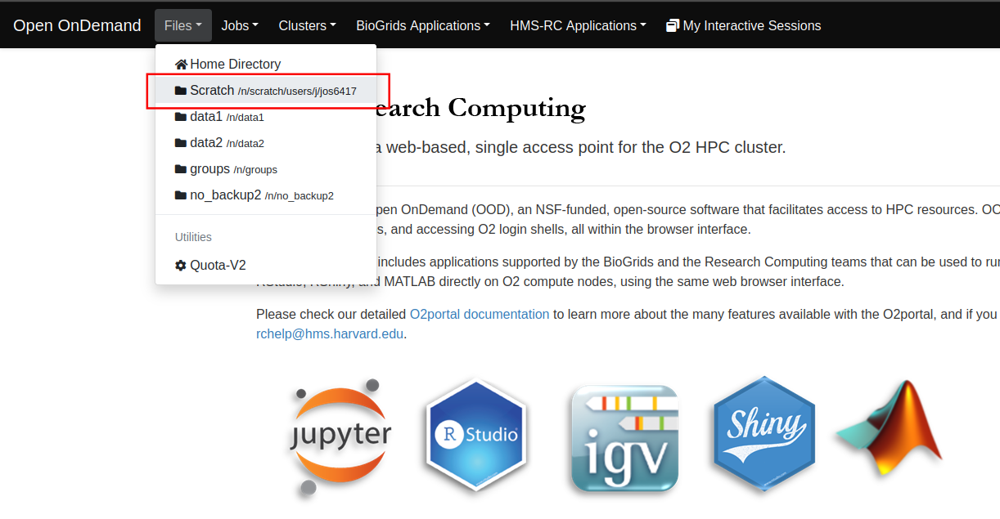
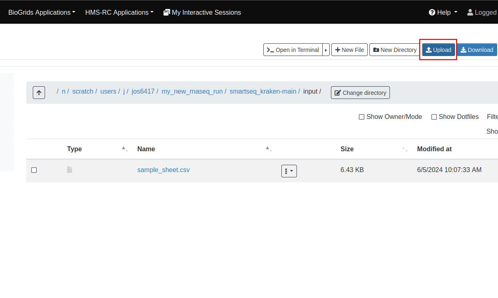

# Accessing your scratch folder on O2
cd /n/scratch/users/{first_initial}/{hms_username}
# Downloading the pipeline
wget https://github.com/kwondry/smartseq_kraken/archive/refs/heads/main.zip
# Unzip and rename the folder
unzip main.zip -d my_new_rnaseq_runRunning the RNA-Seq pipeline
Producing an gene expression matrix and an extensive QC report for downstream analysis
Prequisites
Required software
Ensure you have mamba, snakemake, and nf-core installed on O2. For installation instructions, visit here.
Data
Your sequencing data should be uploaded onto O2.
Downloading the pipeline to your scratch folder
After logging onto O2 via a terminal, we can download the pipeline with the following commands.
You will now have a my_new_rnaseq_run folder that contains all the required scripts and files.
Adding your samples
Download a sample sheet here and add your samples with the corresponding filepaths. You can edit the raw csv in any editor you’d like and save as csv. Columns are named sample, fastq_1, fastq_2, strandedness with fastq_1 being the forward reads and fastq_2 for the reverse reads. If sequences are single-end, leave the fastq_2 column empty. The fastq files should be within /n/groups/kwon/data1/sequencing_run_archive_DO_NOT_EDIT/{your sequencing run}.
Next, upload your sample sheet onto O2. You can use rsync to upload your edited sample sheet onto O2 using your local terminal. Or, you can use the O2 Portal to upload your sample_sheet.csv into the pipeline input folder in your scratch.
rsync -avt path_to_downloaded_file hms_username@transfer.rc.hms.harvard.edu:/n/scratch/users/{first_initial}/{hms_username}/my_new_rnaseq_run/smartseq_kraken-main/input 
Log into the O2 portal with your HMS credentials, click the Files > Scratch, navigate to the input folder, and upload your sample_sheet.
Running the pipeline
Kraken2
The following run a Snakemake pipeline that runs Kraken2. Each sample can takes up to a couple hours, but each sample runs independently on the cluster.
mamba activate snakemake
sbatch submit_kraken.shAfter the pipeline completes, you should see a results/kraken folder which includes the Kraken2 classifications of the sequences for each sample.
nf-core pipeline
The following takes the Kraken2 filtered samples and runs the nfcore/rnaseq pipeline. The run time can range from a couple of hours to a few days. Additional information about the pipeline can be found here.
mamba activate nfcore
nf-core download rnaseq
sbatch submit_nfcore_rnaseq.shFollowing completion of the nfcore pipeline, you should see a results/nfcore folder that has QC, alignments, and gene counts for the samples. The main outputs of interest are in results/nfcore/star_salmon.
#gene counts in each sample
salmon.merged.gene_counts.tsv
#normalized gene counts
salmon.merged.gene_tpms.tsv
#complete QC report of the samples
Nfcore_rnaseq_multiqc_report.htmlSaving the outputs
Files in the scratch directory are automatically deleted 45 days after the last modification date. To ensure your results are safe, copy them to /n/groups/.
If you are in your smartseq_kraken-main folder you can use the following:
cp results/nfcore/star_salmon/salmon.merged.gene_counts.tsv \
results/nfcore/star_salmon/salmon.merged.gene_tpm.tsv \
results/nfcore/multiqc/star_salmon/nfcore_rnaseq_multiqc_report.html \
/n/groups/kwon/(your_group_folder_name)/